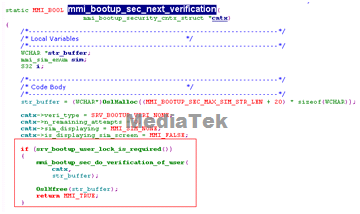

[DESCRIPTION]
（1）在Pluto/FTE版本，客户需要替换现有的开机LOGO;
（1）在Pluto/FTE版本，客户需要替换现有的开机动画;
（3）在开机动画之后，开机流程中添加一个检验流程
（4）开机流程中获取电池电量并使用pop框提示
[SOLUTION]
Q1：替换开机logo
1：将客制化图片添加到mcu\plutommi\customer\image\FTE***x***\MainLCD\Active\Poweronoff目录下，替换logo.bmp,同时压缩MainLCD成image.zip;
2：make resgen & make remake mmiresource；
注意：当前开机logo的图片格式和mmi_features.log里面__MMI_RES_TYPE_BOOTUP_LOGO_IMAGE__的设定相关
Q2：替换开机动画
1：将客制化图片添加到mcu\plutommi\customer\image\FTE***x***\MainLCD\Active\Poweronoff目录下，替换POONOFF.gif,同时压缩MainLCD成image.zip;
2：make resgen & make remake mmiresource；
注意：当前开机动画的的图片格式和mmi_features.log里面__MMI_RES_TYPE_BOOTUP_POWER_ONOFF__的设定相关,除此之外，动画的下显示和__MMI_POWER_ON_OFF_DISPLAY__有关。当此宏控定义时才会显示动画，否则从开机进入idle界面之前只会显示开机logo
Q3：开机流程中客制化密码校验
1：获取到开机流程中安全校验的入口函数mmi_bootup_flow_security,同时参考phonelock的验证流程添加secury verify的流程，参考如下code;

参定义一个全局变量标志当前客制化校验是否执行：

2：设置最大的校验次数以及相关的设置参数；


3：对当前输入的密码进行验证，phonelock是将用户输入密码送入底层底层进行校验，客户可参考验证思路添加函数来验证密码是否正确，再发送相应的验证结果，可参考下列code:

Q4：开机流程中添加电量提示
1：获取到开机流程中安全校验的入口函数mmi_bootup_flow_battery_check,同时获取当前电量对low battery之外的case以confirm的pop框进行提示：

2：点击confirm pop框的ok按钮后才会进入下一个流程，及callback函数的调用
3：在资源文件中针对各个电量定义对应的pop 框显示文字：

注意：开机流程请参考BootupFlow.c中的g_mmi_bootup_main_flow